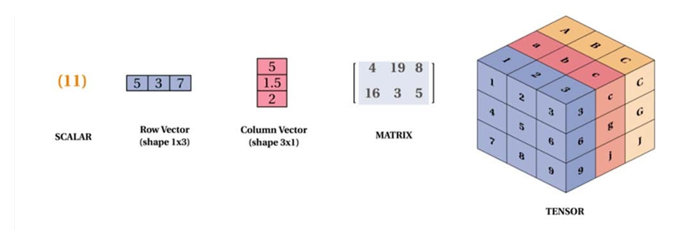
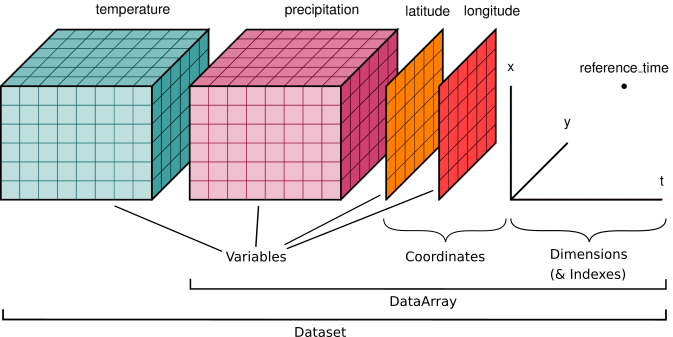
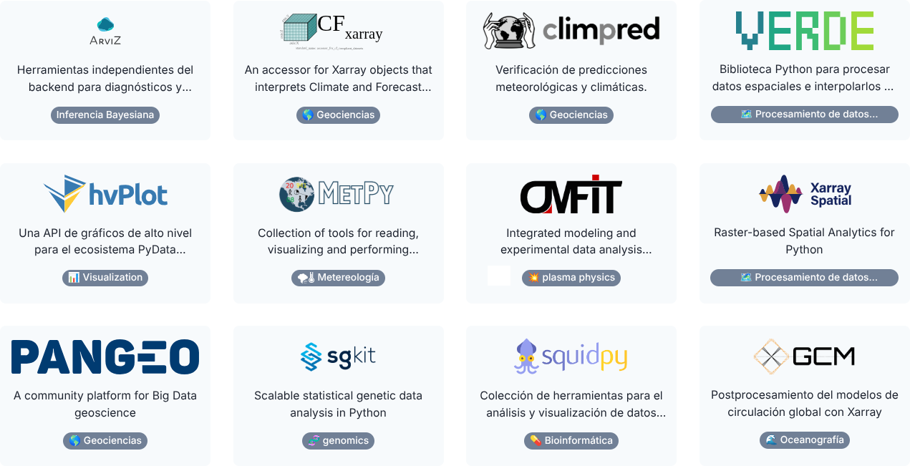

Lecture 02
2026-05-05
Muchos problemas científicos tienen estructura en múltiples dimensiones:
Ejemplos:
Estos datos NO son naturalmente tabulares
| date | region | age | sex | cases |
|---|---|---|---|---|
| t1 | A | 26-35 | M | 35 |
| t1 | A | 26-35 | H | 39 |
| date | origin | destination | flow |
|---|---|---|---|
| t1 | A | B | 100 |
| t1 | A | C | 50 |
¿Dónde está la estructura?
Para representar datos multidimensionales:
Esto introduce complejidad, errores y dificula el análisis y la escalabilidad
Para calcular riesgo:
Conlusión: código complejo para algo simple (poco escalable)
flow(t, i, j)
La estructura es explícita
Un array es una colección de valores organizados en una estructura regular.
Dependiendo de la cantidad de dimensiones:

Un tensor de dimensión \(n\) se denota como:
\(X \in \mathbb{R}^{d_1 \times d_2 \times \cdots \times d_n}\)
donde \(d_i\) es la dimensión \(i\)-ésima
Ejemplo: matriz origen-destino
\(X(t, i, j)\): tensor de dimensión 3 con dimensiones:
Las dimensiones definen la estructura del array:
Cada dimensión tiene un significado específico y puede ser manipulada de forma independiente
Los índices permiten acceder a los valores específicos dentro del array
Acceder a un elemento:
X[t, i, j]Seleccionar un subconjunto (slice):
X[t, :, :] → todos los orígenes y destinos en el tiempo \(t\)
Los índices pueden entenderse como coordenadas en un espacio multidimensional
La transposición es una operación que reordena las dimensiones de un array.
En el caso de una matriz (2D), la transposición intercambia filas por columnas.
Matriz original (2×3)
\(A = \begin{bmatrix} 1 & 2 & 3 \\ 4 & 5 & 6 \end{bmatrix}\)
Matriz transpuesta (3×2)
\(A^T = \begin{bmatrix} 1 & 4 \\ 2 & 5 \\ 3 & 6 \end{bmatrix}\)
En nd-arrays, la transposición puede reordenar cualquier combinación de dimensiones.
X.transpose(0, 2, 1)Ejemplo:
Array original \(X(t, i, j)\)
\(X = \begin{bmatrix} \begin{bmatrix} 1 & 2 \\ 3 & 4 \end{bmatrix} , \begin{bmatrix} 5 & 6 \\ 7 & 8 \end{bmatrix} \end{bmatrix}\)
Dimensiones: \((t, i, j)\)
Transposición \(X^T\)
\(X^T = \begin{bmatrix} \begin{bmatrix} 1 & 3 \\ 2 & 4 \end{bmatrix} , \begin{bmatrix} 5 & 7 \\ 6 & 8 \end{bmatrix} \end{bmatrix}\)
Dimensiones: \((t, j, i)\)
Importante: la transposición reordena las dimensiones de un array
reshape)A veces necesitamos:
El reshape permite cambiar la forma del array sin modificar los datos (e.g. convertir una matriz esparsa en una matriz densa)
Ejemplo: (10, 5) → (5, 10)
El flatten convierte un array multidimensional en un vector (útil para machine learning y almacenamiento):
Ejemplo: (10, 5) → (50,)
Operaciones sobre dimensiones específicas:
Ejemplos
\(\sum_j X(t, i, j)\) → nº total de viajes saliente desde \(i\)
X.sum(axis=2) → en código
\(\frac{1}{N} \sum_j X(t, i, j)\) → promedio saliente desde \(i\)
X.mean(axis=2) → en código
Nos sirve para combinar información de dos arrays con la misma forma (shape)
Y(t, i, j) = A(t, i, j) · B(t, i, j)
Ejemplo: casos normalizados por población
Pero, ¿que pasa si los arrays tienen dimensiones distintas?
Permite combinar datos con distinta dimensionalidad sin necesidad de reestructurar explícitamente
Esto se logra extendiendo automáticamente las dimensiones más pequeñas para que coincidan con las más grandes
Ejemplo: riesgo asociado a la movildiad
Resultado:
risk(t, i, j) = flow(t, i, j) · density(t, i)
Source: https://jakevdp.github.io/PythonDataScienceHandbook/
La difusión de datos en NumPy sigue un conjunto estricto de reglas para determinar la interacción entre dos arreglos:
Si los dos arreglos difieren en su número de dimensiones, el arreglo con menos dimensiones se rellena con unos en su lado izquierdo.
Si el tamaño de los dos arreglos no coincide en ninguna dimensión, el arreglo con un tamaño igual a 1 en esa dimensión se expande para que coincida con el otro.
Si en alguna dimensión los tamaños no coinciden y ninguno es igual a 1, se genera un error.
De momento no entraremos en detalles, pero es importante saber que existen estas reglas
Dataframes
tabla larga → difícil de razonar
Arrays
estructura explícita → fácil de razonar
Además los arrays se almacenan de forma contigua en memoria lo que permite realizar:
Elegir cómo representamos los datos:
importante para escribir código más claro y con menos errores
Coordenadas. Cada dimensión tiene valores asociados:
Esto convierte índices en información interpretable!
Los arrays de NumPy:
X[3, 5, 2] ¿qué significa 3?
no lo sabemos, y es fácil confundir el orden de las dimensiones. X[3, 5, 2] es difícil de interpretar y propenso a errores.
En NumPy:
X[3, 5, 2]
no sabemos qué significa cada dimensión
En problemas reales:
necesitamos coordenadas con significado
Es decir, necesitamos:
Esto es xarray!!
Proporciona:
DataArray que combina la eficiencia de los arrays de numpy con la flexibilidad de las etiquetas.Dataset que es una colección de DataArrays con dimensiones compartidas.

Source: https://xarray.dev/

Source: https://xarray.dev/
¿Cómo guardamos:
en un fichero?
CSV:
no es es un formato adecuado
Formatos diseñados para arrays:
Permiten:
Formato utilizado para el almacenamiento y procesamiento de grandes cantidades de datos, especialmente en meteorología y ciencias de la tierra.
Sus características son:
Xarray trabaja directamente con NetCDF:
Trabajaremos con datos de:
La práctica se divide en dos partes:
Introducción práctica a xarray utilizando ejemplos simples.
Objetivos:
xarray introduce una forma distinta de trabajar con datos.
Antes de aplicarlo a un problema real, necesitamos:
En esta parte vamos a introducir las ideas básicas de xarray con ejemplos simples, y luego las aplicaremos a nuestro problema real.
Aplicaremos xarray a un problema real:
Objetivo
Calcular un indicador de riesgo asociado a la movilidad:
En lugar de:
Trabajaremos con:
Al finalizar la práctica serás capaz de: